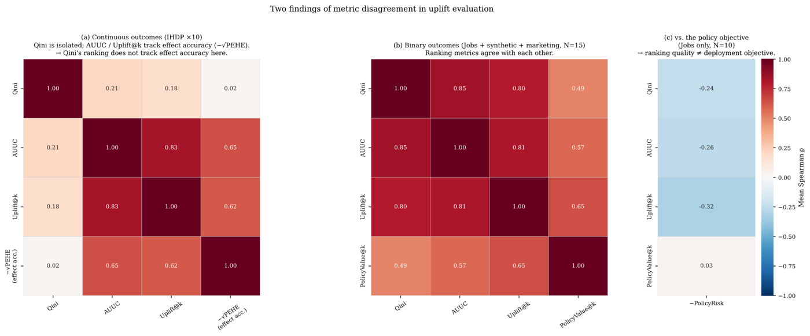
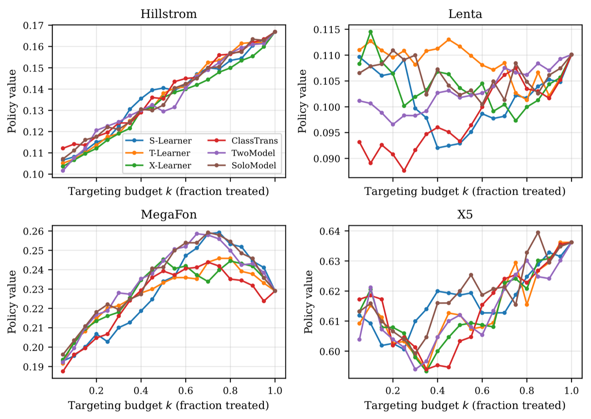

- +0.07 対 +0.56IHDP の 100 実現値で、効果推定の正確さ（\(-\sqrt{\mathrm{PEHE}}\)）との順位相関の平均。Qini は 95% 区間 [−0.03, +0.16] で 0 と区別できず、AUUC との差は +0.49 [+0.40, +0.59]。
- 後悔 14〜15%Jobs で Qini・AUUC・uplift@k によってモデルを選んだときの方策リスクの後悔（最良候補のリスクに対する割合）。ランダムに選んだ場合と区別できなかった。
- 閾値の較正で 81% 減0 で区切る代わりに選択用のデータで閾値を較正すると、Qini で選んだときの後悔が 0.0253 から 0.0049 に下がった。
反実仮想が観測できないので、アップリフトモデルは Qini や AUUC などの代理指標で選ばれている
小売のデータ分析チームがキャンペーンに使うアップリフトモデルを選ぶ場面を考える。どの顧客についても、処置したときとしないときの両方の結果は観測できない。そこで実験データから計算できる代理指標、多くは Qini 係数か uplift 曲線の下の面積（AUUC）で候補を並べる。代理指標で高く評価されたモデルは実際の目的にも合う、という暗黙の前提がある。
論文は、公開されているアップリフトのベンチマークどうしで最良の推定量が食い違うのは、モデルよりも指標の違いによるところが大きいと主張する。指標は「効果の推定値の正確さ」「顧客の並び順の良さ」「その順位で配ったときの価値」のどれを問うかを暗に決めていて、アウトカムの型や運用の目的に合わない指標を使うと、これらの問いの答えが食い違う。
12 の推定量を 7 系統 25 インスタンスのデータで、6 つの指標によって同じ手順で採点する
推定量はメタ学習器 5 つ（S/T/X/R/DR）、クラス変換系 3 つ（ClassTrans、TwoModel、SoloModel）、uplift フォレスト 3 つ（KL/ED/\(\chi^2\)）、因果フォレストの計 12 である。メタ学習器とクラス変換系は LightGBM を共通の基本学習器として使い、頑健性の確認では XGBoost に差し替えている。
データは 7 系統 25 インスタンスからなる（論文 Table 1）。効果の真値が分かるのは、二値アウトカムの自作合成データと、連続アウトカムの IHDP（10 実現値）である。Jobs（LaLonde の職業訓練実験に PSID の観察データの対照群を合わせたデータの 10 通りの再分割、二値）では、ランダム化された実験部分で方策の価値を推定できる。Hillstrom・Lenta・X5・MegaFon の 4 つはマーケティングの RCT で、二値アウトカムだが反実仮想はない。Criteo は 25 インスタンスの集計の外の補足として扱われている。
指標は次の 6 つで、真値が必要な 2 つは使えるデータでだけ計算する。比べやすいように、誤差やリスクは符号を反転して「大きいほど良い」向きにそろえる。
- 順位の指標：Qini（正規化しない）、AUUC、uplift@\(k\)（\(k = 0.3\)）。
- 予算つき方策の指標：上位 \(k = 0.3\) の割合に処置したときの方策価値 PolicyValue@\(k\)。
- 参照目的：\(\sqrt{\mathrm{PEHE}}\)（CATE 推定値の RMSE、合成データと IHDP）と、方策リスク \(R_{\mathrm{policy}}\)（Jobs）。
方策リスクは推定値の符号で配る方策 \(\pi(x) = \mathbb{1}[\hat\tau(x) \ge 0]\) について、ランダム化された実験部分の逆確率重みづけで \(R_{\mathrm{policy}} = 1 - \widehat{\mathbb{E}}[Y(\pi)]\) と定める。PolicyValue@\(k\) は予算で上位を選ぶ方策の価値で、二つは別の量である。前処理・傾向スコアの推定・ハイパーパラメータ調整はすべて訓練用の分割の中で行う（3 分割交差検証を 3 つのシードで繰り返す。内側の調整での傾向スコアの扱いに一部例外があることは論文が開示している）。ただし内側の調整の目的はどのデータでも検証用の Qini で、論文はこの点を限界として明記している。
連続アウトカムの IHDP では、Qini の順位が効果推定の正確さとほぼ無関係だった
IHDP は実在の共変量に潜在アウトカムを模擬で付けたデータで、個人の処置効果が分かる。全 100 実現値で、モデル間の順位相関（スピアマン）を \(-\sqrt{\mathrm{PEHE}}\) と比べると、Qini は +0.07（95% 区間 [−0.03, +0.16]）で、0 と区別できなかった。一方 AUUC は +0.56、uplift@\(k\) は +0.64 だった。同じ実現値で対にした AUUC と Qini の差は +0.49 [+0.40, +0.59] で、100 実現値のうち 80 で正だった。モデルの組ごとに「指標が \(-\sqrt{\mathrm{PEHE}}\) と同じ向きに並べるか」を数えても、Qini は 1,500 組中 0.52 [0.49, 0.56] で偶然と区別できず、AUUC は 0.73 [0.69, 0.76] だった。
同じ IHDP で AUUC と uplift@\(k\) は効果推定の正確さと相関するので、論文はこの孤立を、順位の指標と効果推定の一般的なずれではなく Qini に特有の現象とみる。二値アウトカムでは Qini も普通の順位の指標として振る舞い、AUUC との順位相関は Jobs で 0.90、マーケティングで 0.72 だった。論文は、causalml が連続アウトカムでも警告なしに Qini を計算すること、売上のような連続アウトカムがアップリフトで実際に使われていることを挙げ、気づかれにくい問題だとしている。

Qini と AUUC の関係は式で書ける。予測した効果の大きい順に並べ、上位 \(k\) 人までの処置群・対照群の人数を \(T_k, C_k\) とする。Qini が積分する累積の和 \(g(k)\) と、AUUC が積分する平均の差 \(u(k)\) のあいだには、次の恒等式が成り立つ（論文の Lemma 5.1）。
Qini は AUUC の対比を処置群の累積人数 \(T_k\) で重みづけしたものにあたる。さらにベースラインを引くと、モデルの並びが処置群と対照群をどう混ぜるかに依存する項が加わる。論文はこれを F1 が起こりうる経路として示すが、IHDP での Qini と AUUC の食い違いを完全に説明するものではないとしている。手で確かめられる 12 人の例（論文 Table 9）では、対照群に一人だけ大きな結果（\(y = 40\)）があるだけで、Qini は真値に近いモデル B（\(\sqrt{\mathrm{PEHE}} = 0.06\)）より、ほぼでたらめなモデル A（1.24）を高く評価する（\(Q_A = -1.18\)、\(Q_B = -1.63\)）。この一人の結果を 0 にすると、Qini は B を選ぶようになる（\(-1.54\) 対 \(+1.13\)）。
IHDP の主な 10 実現値では、Table 6 は Qini +0.02、AUUC +0.65、差 +0.63 [+0.35, +0.91] としている。一方、Fig. 1 の説明文と 5.1 節の本文は Qini −0.15、AUUC +0.68 となっている。このページの数値はすべて arXiv v1（2026 年 8 月 2 日）による。
ただし F1 は 3 つの連続系統のうち IHDP でしか現れず、裾の重さでは説明できない
論文は、効果の真値が分かる連続アウトカムの系統を 2 つ加えて F1 の範囲を確かめた。ACIC 2016（18 インスタンス）と、対数正規の支出に乗法的な効果を持たせた Revenue-Synthetic（10 実現値）である。どちらでも Qini は効果推定の正確さとそれなりに相関し、AUUC との差は 0 と区別できなかった。
| 系統 | Qini \(\rho\) | AUUC \(\rho\) | 差 \(\Delta\)（AUUC − Qini） | 超過尖度 |
|---|---|---|---|---|
| IHDP100 実現値 | +0.07[−0.03, +0.16] | +0.56 | +0.49[+0.40, +0.59] | 0.3中央値 |
| ACIC 201618 インスタンス | +0.48[+0.25, +0.68] | +0.55[+0.34, +0.73] | +0.11[−0.03, +0.25] | ≈0.4 |
| Revenue-Synthetic10 実現値 | +0.39[+0.00, +0.73] | +0.37[−0.01, +0.70] | −0.02[−0.19, +0.17] | 44中央値（19〜109） |
\(\rho\) は \(-\sqrt{\mathrm{PEHE}}\) との順位相関の平均、角括弧は 95% 区間。超過尖度は観測されたアウトカムのもの（IHDP の主な 10 実現値では中央値 −0.4）。論文 5.3 節と付録の数値から解説者が表にまとめた。
F1 が現れた IHDP はむしろ裾が軽く、裾の最も重い Revenue-Synthetic では Qini は効果推定の正確さと相関した。論文はここから、裾の重さは F1 の必要条件でも十分条件でもないと結論している。アウトカムの分布だけを変える統制実験でも、裾が重くなると Qini と AUUC はそろって悪化し、Qini だけが孤立する現象は再現しなかった。アウトカムを正の定数倍したり定数を足したりしても、どの指標の順位も変わらないことは証明されている（論文の Prop. D.1）。
F1 は分析上の選択にも左右されなかった。ハイパーパラメータ調整を止めても差は +0.55 [+0.33, +0.77]、内側の調整の目的を AUUC に替えても +0.56 [+0.34, +0.78] で、DR 学習器や R 学習器を除いても、XGBoost に替えても差は正のままで、causalml 付属の Qini で計算し直しても結果は変わらなかった。一方、F1 がなぜ IHDP でだけ起きるのかは分かっていない。論文は「Qini は IHDP では役に立たないが、それは裾が重いからではなく、理由はまだ言えない」と書き、新しいデータで Qini を検証なしに信頼すべきでない根拠としている。
推定値の符号で配る方策を選ぶとき、順位だけを見る指標はスコアの水準を捨てるので足りない
順位だけに依存する指標は、スコアに一律に定数を足しても値が変わらない。一方、\(\hat\tau(x) \ge 0\) なら処置する方策は、定数を足すと処置する相手が変わる。したがって、並び順が同じでスコアの水準だけが違う 2 つのモデルを、順位の指標は区別できない（論文の Prop. 5.3）。符号で配るときに最良のモデルを選ぶには、スコアの水準（較正や明示的な閾値）が要る。
Jobs はこの違いが実際に現れたデータである。2 つの繰り返しシードで選び、残り 1 つのシードで評価する回し方で、ランダムに選ぶ場合と比べた方策リスクの減り方を測った。方策リスクそのもので選ぶと 0.0209（95% 区間 [0.0071, 0.0358]）減り、区間は 0 を含まなかった。Qini・AUUC・uplift@\(k\) で選ぶと減り方は −0.0070、−0.0070、−0.0050（負はリスクが増えたことを表す）で、どれも 0 と区別できなかった。Jobs には方策を選ぶための信号があるのに、順位の指標はそれを拾えていないことになる。
順位の指標で選んだモデルの後悔（参照で選んだ最良候補とのリスクの差）は 0.026〜0.028 で、最良候補のリスクの 14〜15% にあたる。0 で区切る代わりに、選択用のデータで方策リスクが最小になる閾値をモデルごとに選ぶと、Qini で選んだときの後悔は 0.0253 [0.0064, 0.0437] から 0.0049 [−0.0082, 0.0198] に 81% 減った。論文はこれを最も直接に使える提言としている。符号で配るなら、順位の指標と、較正した閾値を組み合わせる。
論文自身はこの証拠を「控えめ」と評価している。Jobs の 10 インスタンスは同じ標本の再分割で、選択・較正・評価が同じ観測を使う。逆確率重みづけのリスクは標準誤差が約 0.023 と後悔と同じ程度に大きく、分割間の依存 \(\bar\rho\) が 0.12 を超えると後悔の区間は 0 を含む。このため F2 は Prop. 5.3 による構造的な議論、選び方の対比、閾値の較正という互いに支え合う結果の上に置かれている。
予算で上位 \(k\) 割に配る目的なら、順位の指標でも方策を選べた
F2 は目的に固有の現象である。参照と目的の両方を、決まった予算 \(k\) での方策価値にすると、どの選び方もランダムより良くなり、指標で選んだときの後悔はどの予算でも 0 と区別できなかった（\(k = 0.3\) で Qini の後悔は −0.002 [−0.004, +0.002]、ランダムに対する改善は +0.007 [+0.006, +0.009]）。予算で上位を選ぶなら並び順で足り、符号で配るなら水準が要る。論文はこれを「指標は意図する運用ルールに合わせなければならない」理由としている。
なお、方策リスクを参照にしたままなら、選択に使う予算 \(k\) を 0.1 から 0.5 まで変えても F2 の後悔は正で、区間は 0 を含まなかった（\(k = 0.1\) で 0.029、\(0.5\) で 0.027）。また、マーケティングの RCT では予算ごとに最良のモデルが入れ替わる（図3）。

先にアウトカムの型と配り方に合う指標を決め、それからモデルを選ぶ
論文は実務向けの手順を次のようにまとめている（論文 6 節と付録）。
- アウトカムの型に合わせる：連続アウトカムでは正規化しない Qini を唯一の基準にしない。効果の真値が分かるか模擬できるなら \(\sqrt{\mathrm{PEHE}}\) を使い、そうでなければ自分のデータで Qini と AUUC の順位を比べ、食い違うなら勝者を不安定とみなす。二値アウトカムでは Qini を順位の指標として使ってよい。
- 運用の目的に合わせる：決まった人数で上位に配るなら順位の指標で足りる。符号で配るなら、選択用のデータで較正した閾値と組み合わせる。予算制約のある割当てではその予算での方策価値を直接評価し、配る量が効果の大きさに依存するなら較正も確かめる。
- 推定量の向き不向き：この論文の小さな分割では R/DR 学習器が数値的に不安定になることがあり、単純な学習器が健闘した。単純なベースラインを含める。
- 複数のデータで確かめる：1 つのデータでの順位は、他のデータにはあまり引き継がれない。
人数の割合で表した予算での方策価値を評価に含めるが、処置コストは扱わない
- 何を推定するか：新しい推定量は提案しない。12 の既存の推定量が出す CATE \(\hat\tau(x)\) を、どの指標で比べるべきかを調べる評価の論文である。
- コストの扱い：処置コストは出てこない。アウトカムは二値か連続（IHDP の模擬アウトカム、Revenue-Synthetic の支出）で、費用を差し引いた利益にはしていない。
- 処置の種類：二値（処置する・しない）。
- 予算制約の扱い：予算は「上位 \(k\) の割合に処置する」という人数の割合で表され、PolicyValue@\(k\) として評価に入る（\(k \in \{0.1, 0.2, 0.3, 0.5\}\) など）。金額の予算や、一人ごとに違うコストの合計への上限は扱っていない。予算つきの方策価値を目的にすると順位の指標で足り、F2 が消えることを示している。
一人あたりのコストが全員同じなら、ROI（増分 ÷ コスト）の順は \(\hat\tau\) の順と一致するので、ナップザック問題の連続緩和の解は「\(\hat\tau\) の大きい順に予算まで配る」になる。この場合は、予算で上位を選ぶ目的なら順位で足りるという論文の結果と整合する。一方、予算の制約が効かずに緩和の閾値（ラグランジュ乗数）が 0 になる場合は、「\(\hat\tau > 0\) なら配る」という符号の方策に戻るので、F2 の議論のとおりスコアの水準が要る。コストが一人ごとに違う場合は、ROI の順と \(\hat\tau\) の順は一般に一致しない。そのため、\(\hat\tau\) の順位だけを測る Qini・AUUC・PolicyValue@\(k\) で選んだモデルが、ROI 順の割当てで良いとは限らない（解説者の注）。この論文はコストを含む指標を扱っておらず、この点は検証されていない。
@misc{li2026upliftbench,
title = {UpliftBench: Revealing Outcome-Regime and Objective Mismatch in Uplift Evaluation},
author = {Li, Binshuang},
year = {2026},
eprint = {2608.00915},
archivePrefix = {arXiv},
primaryClass = {cs.LG},
doi = {10.48550/arXiv.2608.00915},
url = {https://arxiv.org/abs/2608.00915}
}